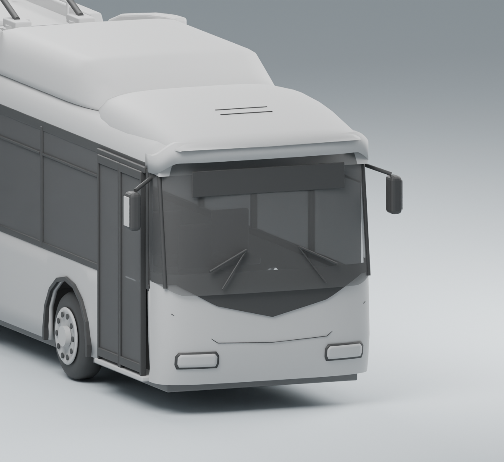
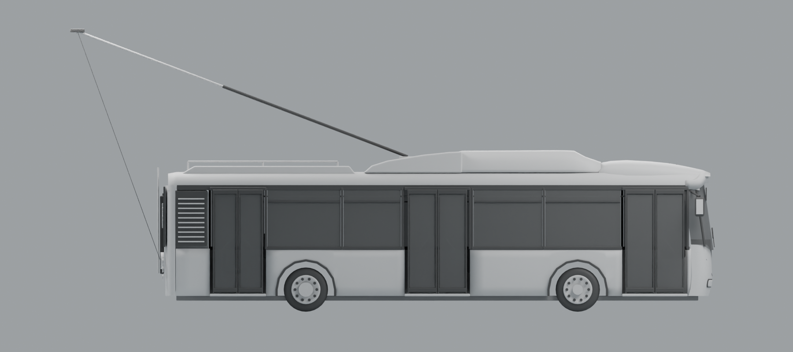

Фото · общий передний ракурс
Закрытый кожух, оконный пояс, свесы и переход к носовой части.
Сравнение форм без ливреи и текстур. Кадры перспективные: наложение не считается измерительным чертежом.
Закрытый кожух, оконный пояс, свесы и переход к носовой части.
Нейтральные материалы. Проверяем форму, а не окраску.
Панорамное стекло, скруглённый козырёк и чёрная V-образная маска.

Нейтральные материалы. Проверяем форму, а не окраску.
Объём оборудования за последней дверью и закруглённая корма.
Нейтральные материалы. Проверяем форму, а не окраску.
Проверка ритма дверей/окон, базы и профиля крыши. Фото имеют приоритет.

Нейтральные материалы. Проверяем форму, а не окраску.